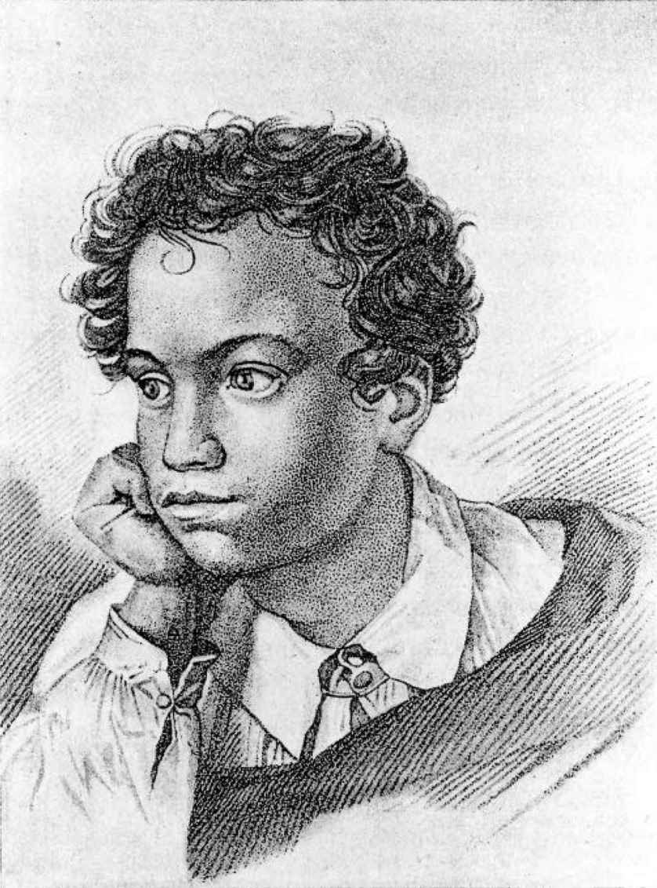
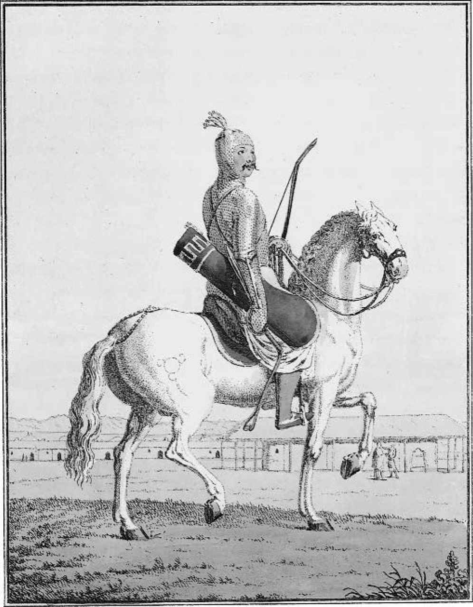
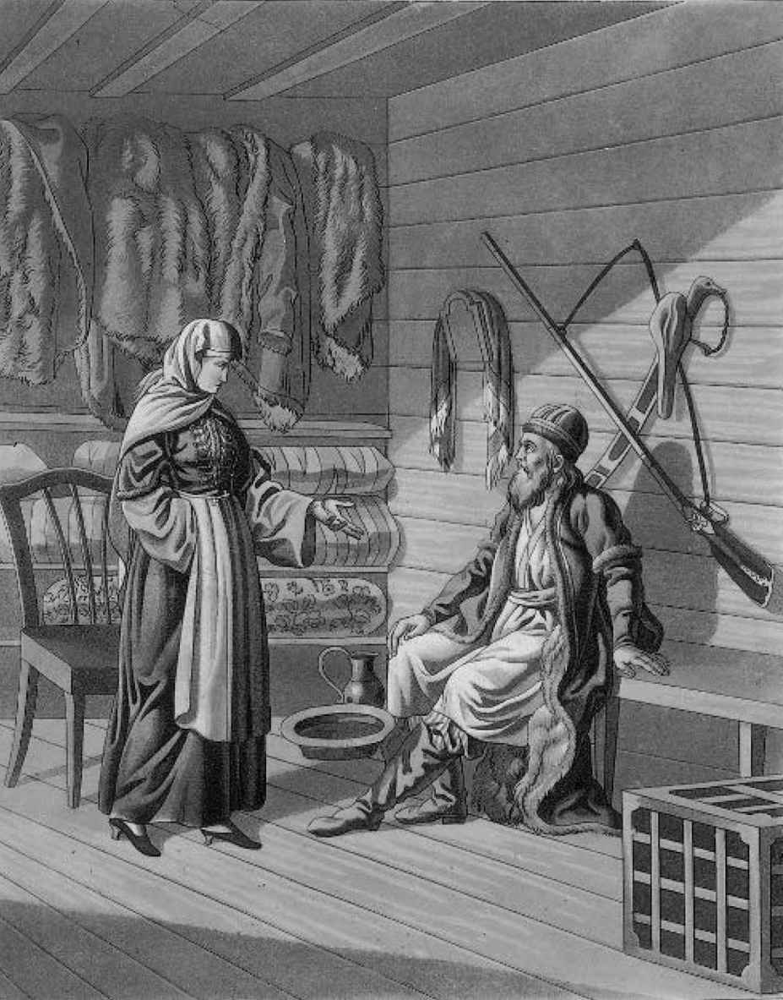

（M. L.加斯帕罗夫，2000年）
《“纪念碑”》设想普希金的名字不但在欧洲尽人皆知，在亚洲也闻名遐迩。诗人预言，俄罗斯的各大部族——波兰人（“骄傲的斯拉夫人后裔”）、芬兰人（芬兰大公国已于1800年并入俄罗斯版图）、通古斯人（如今被称为鄂温克人，是西伯利亚的土著）和卡尔梅克人（来自高加索以北地区，里海沿岸）中都会有他的读者。如果普希金真的有预言地缘政治的天赋，他大概还会加上乌兹别克人、哈萨克人和吉尔吉斯人，因为在苏联时代，整个苏联的所有学校都必须教授俄语，这意味着绝大多数公民，不管隶属于哪个民族，都听说过普希金的名字。
关于中亚各民族没有出现在普希金所列的“各部落”中很容易解释：俄罗斯在中亚的首批征服发生在19世纪中期，该地区直到1880年代才完全臣服。但即便以普希金时代的俄罗斯帝国版图来说，他所列的清单也不够详尽。“芬兰人”还代表波罗的海人（爱沙尼亚人、拉脱维亚人和立陶宛人），而且这里也没有提到格鲁吉亚人和亚美尼亚人。这样有选择地对待少数民族群体并非偶然。格鲁吉亚人和亚美尼亚人都是有文化的民族，基督教在那里有很长的历史，因此提到他们就会动摇普希金所说的将自己的诗作为向野蛮人传递文明价值观之手段的信念（在《“纪念碑”》中，诗人事实上真的对通古斯人使用了“野蛮”这个形容词）。普希金在二十出头的青葱岁月里曾对东方异国情调有过拜伦式的着迷，然而从写作《茨冈》（1824）之时，他便开始对此持反讽态度，力图淡化各民族之间的奇妙差异。《茨冈》的结尾强调了道德问题的普遍性：
一位吉卜赛 [36] 长者后来被证明是一个启蒙主义说教者，还很古怪地听说过奥维德（不过他并不知道这个名字：只知道这是个政治流亡者，从南方的罗马流亡到“北方”的高加索）。更值得关注的是，诗人在叙事中选择了相对平淡无奇的细节，以此来淡化地方特色。吉卜赛侍从中包括一个戴着镣铐的跳舞熊，就是很多俄罗斯村庄里出现的那种；外来者阿列科是天真的理想主义者，而他的吉卜赛妻子泽姆菲拉则是个实用的利己主义者。同样，在他的游记《埃尔祖鲁姆之行》（1829）中，普希金百无聊赖地记录了穿越高加索遭遇的那些恼人的困难：交通不可靠、车夫太贪婪；旅馆太脏、女人太丑；土耳其人和高加索部落民的敌意有增无减。只有通过对比，俄罗斯侵略军的大无畏和正义感才能显出优势；这个文本强调通过军事干预即有希望获得救赎，这是它与亚历山大·威廉·金莱克的《日升之处》（1841）之间最主要的不同，虽然两个文本的语调都尽显疲态。用语言学家和学者彼得·弗朗斯的话说，《埃尔祖鲁姆之行》“破坏了大多数高加索作品的浪漫尚古主义根基［……］是对夏多布里昂的《从巴黎到耶路撒冷》的戏仿，嘲讽了这类游记文学的陈词滥调”。同时，该文本还符合正在扩张中的俄罗斯帝国主义的官方意识形态，那种意识形态认为，用地理学家马克·巴辛的话说，被归于亚洲的“停滞”“看似恰好为西方那种富有创造力和进步性的发展活力提供了落后参照物，俄罗斯现在认为这活力是属于它自己的”。
然而就帝国的想象世界来说，《埃尔祖鲁姆之行》违背了常理（普希金本人似乎也感觉到了这一点：在他生前，这本书只出版了一部分）。让–雅克·卢梭关于“高贵的野蛮人”的信念在1830年代和1840年代仍对很多人颇有诱惑力；浪漫主义文学中随处可见的对异国情调的追寻在俄罗斯已经转向了国内，用于那些刚刚被帝国征服、尚未丧失强烈的地方特色的领土，当然这些地方特色有时也充满危险。在这些被征服的领土中，更有吸引力的当属克里米亚，特别是高加索地区，盖因其将“东方”风味与壮美风光（就像吸引西方猎奇者的阿尔卑斯山风光一样）合而为一。普希金本人在《高加索的俘虏》（1822）和《巴赫奇萨赖的泪泉》（1823）中，将沉迷于肉体欢愉和文化纠葛的拜伦式戏剧场面从奥斯曼帝国移植到了克里米亚和高加索地区。在这两个文本中，更吸引现代读者的是《巴赫奇萨赖的泪泉》。该文本不仅在心理层面对核心冲突（后宫中因妒而生的阴谋）进行了更充分的发展，也揭示了关于女人是民族身份象征的有力神话（一个暴躁阴郁的格鲁吉亚人的对立面是一个贞洁的金发碧眼的波兰女人，后者是西欧的象征）。此外，整首诗不光华丽丰美，也摆脱了拜伦式的陈词滥调（什么山峦是“荒野之王”云云），《高加索的俘虏》则仿造了类似的陈词滥调。然而后一首诗对普希金的同代人来说更有意义：的确，这首诗可以被称为启动了文学上的“高加索大发现”。那时的读者们为诗中对风俗、服饰和礼仪的长篇描写（这些都是从出版资料中借用的，但在当时却被解读为第一手民族志）欣喜若狂，诗中那位神秘而冷漠的主人公因为被囚禁在风景如画的地方，而治愈了奇怪的疾病。用曾经写过一部关于俄罗斯殖民主义文本的先驱性著作的苏珊·莱顿的话说，这首诗鼓励了一种“关注自我的康复旅游业”，记述了一种关于俄罗斯南部的“浪漫而富有想象力的地理”，在其后的三十年里，被数不清的作家所借鉴。毫无疑问，普希金本人得自母亲一方的异国血统（他的曾外祖父汉尼拔，也就是“彼得大帝的摩尔人”，是非洲人）也有助于建立他作为这一“富有想象力的地理”描述者的可信度：《高加索的俘虏》第一版的出版商就找了一幅皮肤黝黑、“像摩尔人”的普希金童年肖像作为该书的插图。（图17）

图17 伊格尔·盖特曼根据一幅普希金儿时的匿名画作雕刻。浓重的交叉影线让普希金看上去像个深色皮肤的“非洲人”
这个例子表明，出版商、评论家和读者总是倾向于混淆作者和主人公，在莱蒙托夫的《当代英雄》（1841）中，作者在序言部分烦躁且适时地警告人们不要如此混淆。之所以如此，部分原因是“康复旅游业”神话本身往往会利用伪装的母题。约翰·巴肯笔下的桑迪·阿巴思诺特（苏格兰绅士、“绿斗篷”、德尔维希先知）和鲁德亚德·吉卜林笔下由动物们抚养长大的毛克利，两者共有一个离奇的先驱，就是亚历山大·别斯图热夫–马尔林斯基那部《阿玛拉特–伯克》（1832）中的同名主人公，这位完美的部落人事实上是俄罗斯人的后裔。俄罗斯东方题材奇幻故事中最伟大的人物是切尔克斯人——一个骁勇善战的山里人，过着节俭的游牧生活，偶尔会靠成群劫掠改善生活。这个另类的世界一点儿也不像《巴赫奇萨赖的泪泉》中提到的危险阴毒、封闭放纵的浴场和后宫世界，也不像杰尔查文曾在他的讽刺杰作《费丽察颂》中大肆抨击的那种18世纪的俄罗斯东方风格。在杰尔查文的那部作品中，叶卡捷琳娜宫廷里的贵族显要身穿丝质长袍，慵懒地躺在天鹅绒沙发上抽着水烟袋。“充满阳刚”和坚不可摧的切尔克斯人对19世纪俄罗斯游记作家的吸引力，很像20世纪上半叶前往阿拉伯的英国游客对贝都因人的崇拜（比如T. E.劳伦斯 [37] 和威尔弗雷德·塞西杰 [38] ）。人对自己得不到的东西都会充满浪漫想象，在这里，这种想象既适用于不同的文化之间，也适用于男女之间的关系：欲望的终极目标会长久地无法占有。与此同时，作家们本人被卷入了殖民化进程，而反抗殖民化的那些部落又让征服过程带上了特有的光环：侵略者的勇猛与侵略过程中的危险相得益彰。用苏珊·莱顿的话说，高加索地区并不只是“救赎之地”，也是一个“杀戮战场”，是俄罗斯军官展示荣誉之剑的试验场。与此同时，深思熟虑的俄罗斯作家们则感觉到了俄国与“被征服民族”之间微妙和矛盾的关系，这使得他们不再以脸谱戏剧化的方式来表现“文明”与“野蛮”的对峙。一个例子是对哥萨克人的描述，传统上一直认为，他们是俄罗斯边疆的守卫者（果戈理在他那部狂热的民族主义小说《塔拉斯·布尔巴》中，就写到他们守住俄罗斯的边境和东正教，不让它们落入背信弃义的波兰人手中）。跟民族主义的神话相反，高加索地区的哥萨克人非但没有保卫俄国人和其他少数民族之间的前线，反而展示了那个前线有多薄弱。正如近代历史学家托马斯·巴雷特所说，他不理解“比如哥萨克瑙尔村的亚科夫·阿尔帕托夫，他曾两次逃到山上，又皈依伊斯兰教，在1850年代成立了车臣人和哥萨克人的盗窃团伙，不但劫掠哥萨克人的农庄、盗窃牛羊、掳走俘虏，还深入大草原去抢劫卡尔梅克人和诺盖人，这样的人会有多‘哥萨克’？”。这些民族身份的紧张关系也是托尔斯泰的中篇小说《哥萨克》的重要内容，小说的主人公阿尔帕托夫发现自己面对的那个文化在外人看来，跟土耳其或埃及社会一样“东方”，一样刀枪不入。如果这里的“东方”和“西方”之间的边界只是向东稍稍偏移了一些（把城市人阿尔帕托夫和土著居民所代表的部落文化隔开，而不是把土著居民和部落文化隔开），其他文本则使得这个界限的存在本身变得可疑。莱蒙托夫的《当代英雄》中最动人的人物不是坏脾气的毕巧林——他不过是邦雅曼·贡斯当的《阿道尔夫》的一个近亲后裔——而是不善言辞、资质平庸的马克西姆·马克西梅奇，这位低级军官对土著的情况了如指掌，这不仅令他对“懒惰的土著”态度粗暴且毫不容忍，也让他对土著的信仰十分敏感，因而能够处事圆通。毕巧林那位短暂的切尔克斯情人贝拉死后，马克西姆·马克西梅奇不光亲自为葬礼做了安排，还为贝拉本人献出了一段感人的悼文：

图18 切尔克斯勇士：这是一位19世纪的英国艺术家所画的阳刚的英雄
这段话与毕巧林在厌倦了贝拉之后用犬儒主义的滥调对她做出的宣判形成了鲜明对比：“一个蛮女的爱情比贵妇人的爱情并好不了多少；这蛮女的无知和单纯，跟贵妇人的卖弄风情同样使人厌倦。” [40] 连毕巧林面对贝拉之死的反应也是套路：用马克西姆·马克西梅奇的话说，“他却抬头笑了起来……这一笑使我浑身发冷” [41] 3。不管毕巧林怎么像部落民那样夸张做戏，他始终没有像业余“游记作家”叙述者那样充分领会山地精神，接近山地居民。这位游记作家发现了毕巧林的日记并决定发表这些日记来用文学引起世人注意，在莱蒙托夫那部多视角的小说中，他提供了第二层的评说。

图19 哥萨克士兵。注意这人和他妻子的“东方化”外表，由一位不知名的19世纪俄罗斯艺术家所绘
如此看来，莱蒙托夫的小说就把浪漫花花公子假装同化的作态与普通实干家对差异的尊重，把都市绅士对所谓不同民族间不可逾越之障碍的长吁短叹与下层居民关于这一障碍只是假象的信念同时呈现在读者面前。与此同时，毕巧林本人也不曾与高加索人和东方世界面对面地遭遇：他最终死于波斯，在那之前，他的身体和精神曾屡次濒临崩溃。正如苏珊·莱顿所指出的，俄罗斯作家不像他们的西欧同行（不妨加上一句，西班牙除外）那样容易相信“东方的相异性”，因为他们的国家不断吸收一波又一波的侵略者（佩切涅格人、鞑靼人），并把“东方”同化并融入他们自己的文化中。
俄罗斯民族情绪起伏易变，最清楚地表现这一特点的，莫过于在卡拉姆津那部划时代的《俄罗斯国家史》（1818）中，收入的15世纪商人阿发那西·尼吉丁那部出色的印度游记《三海纪行》。位于一部歌颂强大俄罗斯的历史著作核心的是这样一个文本，其结尾几乎逐字逐句地转录了伊斯兰教皈依者所念的祈祷词。卡拉姆津在自己的著作中发表尼吉丁的叙事，显示了俄罗斯国家身份中核心部分的不确定性，也表明与“他者”的接触可能导致俄罗斯与东方更加亲近，而不是加深俄罗斯的欧洲与远东领土之间的隔阂。
这种亲近感不仅体现在1820年代开启的研究东罗马帝国语言和文化的卓越学术传统中，也体现在哲学和艺术作品中，最终在20世纪初的“欧亚主义”中达到高潮。勃洛克的重要抒情组诗《在库利科沃战场上》，是对1380年战胜鞑靼人的那场著名战役的与众不同的解读，那场战役对必胜式民族史的重要意义相当于博罗季诺战役 [42] （或英格兰传统中的阿金库尔战役 [43] ）。勃洛克在组诗中选择的意象不仅让人想起了14世纪末庆祝库利科沃大捷的文本《顿河彼岸之战》，还让人想起一部更著名的歌颂光荣的俄罗斯大胜的12世纪文本《伊戈尔远征记》。在一个视角于14世纪和写作时间之间来回滑动的文本中，这种互文性的两次曝光只是文本的多重歧义之一。跟勃洛克写于同时期的文章《人民与知识分子》一样，该文本也是为哀叹“鞑靼”知识分子与“真正的俄罗斯”下层人民之间那种“牢不可破的边界”而作。
因而在某种意义上，我们可以看到俄罗斯文学既是殖民主义的，又是后殖民主义的，同时采用征服者和被征服者这两种对立的视角。欧亚派中见解最独特的思想家尼古拉·特鲁别茨科依对欧洲文化采取一种军事相对论的态度——“欧洲文化只有对创造了这一文化的那些民族才是必不可少的”——这非常符合“认同黑人文化传统”运动（négritude ）精神，即1940年代法语区的非洲和西印度知识分子掀起的自我认同运动，当然也符合美国黑人哲学的精神。在特鲁别茨科依看来，俄罗斯文化的多样性就像俄罗斯帝国集合了各个种族一样，是值得骄傲的。不过说到自然风光，欧亚派更容易为他们熟悉的风光所吸引，而不那么钟情异国情调。大草原成为更受青睐的想象空间，而非高加索地区无法逾越的绵延山脉。河流作为大草原上唯一的边界，不仅被看成是战线之间“牢不可破的边界”，也被看作是可以秘密穿越的边境或被用作商贸路线。俄语也是一样，虽然屠格涅夫等西化的俄国人认为它首先象征着国家差异，但如今人们则认为，俄语是可以被东方语言渗透的，它大量吸收了土耳其外来语和语音，这也是它跟其他斯拉夫语言的差别所在。
写作《在库利科沃战场上》十年之后，勃洛克本人也转变了，他不再把俄罗斯文化的二元遗产，即“鞑靼性”和“俄罗斯性”看成悲剧，转而认为它是力量之源。他写于1918年的诗歌《斯基泰人》（这里引用的是罗宾·肯博尔的译文）赞颂的，就是一个自古希腊时代起一直被看成是活力和野蛮典范的部落。斯基泰人代表着俄罗斯生命力的复苏，在俄罗斯传统上一直被认为是抵御东方人入侵的堡垒，如今却威胁着要用它多种族混居的生命力去征服衰落的西方文明：
勃洛克在诗中含蓄地把俄罗斯的“斯基泰人”一面与俄国革命的创世神话联系起来，诗人自己最初对革命反应热情，把它理解为以前受到压迫的“野蛮的”贫困阶层获得了权力。建立这种联系的倒也不止勃洛克一人。在作品中表现东方，从历史上看，是和表现“人民”（narod ，这个俄语名词有“人民”和“国家”两种含义）密切交织在一起的。在一个直到1897年非文盲还仅占人口21%的文化中，有时人们认为“文明”与“野蛮”之间的对立恰恰映射了“西化的”和“本土俄国人”之间的分野。
随着斯拉夫派运动在1830年代兴起，“受过教育的俄国人在自己国家是外国人”这一观念变成文学和新闻中的老生常谈。人们意识到，寻找未受污染的异国情调不一定要前往高加索地区：在俄罗斯乡下也能体验。1820年代，和其他欧洲国家的同类一样，一些俄罗斯浪漫主义作家也开始把民间传说和民歌视为文学创作的灵感来源。起初提供灵感的是民间文本的主题和情节，而不是语言和结构。普希金某些基于民间传说题材（skazki ，即童话）的故事，如《神父和他的长工巴尔达的故事》（1830）就演绎了口语传统的题材（诗人是于1820年代末在米哈伊洛夫斯科家族庄园逗留时，亲耳听人讲述并记下的），使用的语言接近大众口语，只略加文饰。但其他作品，例如《金鸡的故事》（1834），则源于西欧，以韵文而非散文写成，使用了有教养的谈话的词汇和词形变化。和他的童话叙事诗《鲁斯兰与柳德米拉》（1820），以及他的同代人及后继者们创作的韵文故事（如彼得·叶尔绍夫的《小驼马》，1834年）一样，普希金的童话也有迷人的雕琢痕迹，就像夏尔·佩罗或让娜·莱里捷改写的法国民间故事，如《睡美人》和《美女与野兽》。
然而俄罗斯农民真正的日常生活——贫病交加、少到可以忽略不计的教育，以及（1861年以前）随时可能沦为农奴的风险——可没有让作家们变得风趣机智。相反，从18世纪末开始，俄罗斯文学开始充满感伤地把注意力转向在残暴冷酷的地主那里干活的俄罗斯农民的苦难。传统上风流潇洒的俄罗斯军官象征着高加索地区教化文明的浪漫先驱，而这一形象的对立面就是受剥削的下层妇女形象，比如卡拉姆津的《可怜的丽莎》（1792），就表现了一个农村女孩遭到了一位自私的上层社会年轻男子的玩弄。当然，普希金的《别尔金小说集》（1829）中的《驿站长》那个故事表明，上流社会的男子和他来自“人民”的情人之间的关系或许是双方你情我愿，而不是一方对另一方的剥削，但从已经开始占据1840年代俄罗斯文学创作半壁江山的俄罗斯激进主义者的视角来看，这个说法可站不住脚。的确，在1840年代和1850年代，就算在某些保守主义者看来，农奴制也是一种本质邪恶的制度。1851年，在俄罗斯富有政治热情的韵文作者中极富才华的激进诗人尼古拉·涅克拉索夫，用一个堕落的平凡农妇作为他诗歌的意象和他充满社会同情的标记：
1861年的农奴制改革使人们对农民苦难的关注不减反增。诚然，托尔斯泰等作家对地主和农民的新型关系采取了一种乌托邦式的看法。《安娜·卡列尼娜》（1876—1878）中列文庄园的情景把家长制的农村家庭表现为一种成功家庭的模式，夫妻互爱互补，生活圆满幸福。二十年前，在《一个地主的早晨》（1851）中，托尔斯泰曾写过一个热心的年轻俄罗斯绅士试图向自家的农奴们介绍合理的工作方式：而如今的列文则不仅从他那些被解放的农民那里学习如何锄地，也学习如何看待生活。在书本中学习哲学和神学也未能平息自杀式幻灭的列文，最终却因为听说了一位“为灵魂而生，要记着上帝”的老农的生活态度，才开始获得内心的平静。
然而只有当农民的自耕地能为他们提供尚可忍受的生计时，才有可能赞颂农村生活。土地改革的混乱过程不但让1861年以前靠庄园收入维生的很多地主破了产，也让农民的经济变得毫无着落，有些人的境遇比土地改革之前更差了。一个坏年景就能导致贫困和饥荒。在农奴解放后的农村管理机构地方议会（zemstva ）里，那些受过教育的雇员，如医生和教师，把这一切都看在眼里，他们中的很多人都同情民粹主义（Narodnichestvo ），该运动的宗旨不仅在于让“人民”获得教育和政治启蒙，也（不无悖论地）包括维持传统做法和农民生活的价值观。伴随着民族志学（系统收集民间故事、记录物质文化和日常生活）的繁荣，民族学细节丰富的小说开始兴起，但这些小说同样对社会充满悲观情绪。格列布·乌斯宾斯基、尼古拉·乌斯宾斯基、瓦莲京娜·德米特里耶娃以及后来的弗谢沃洛德·迦尔洵、弗拉基米尔·柯罗连科和叶卡捷琳娜·列特科娃等作家的批判现实主义小说为读者描绘了一幅悲凉无望的俄罗斯农村图景。这些文学作品中描述的堕落潦倒如此极端，让人们不得不思考应该如何通过社会改革来改变现状。这一传统后期的一个尤其令人沮丧的例子是契诃夫的短篇小说《农民》，它让托尔斯泰等更为理想主义的民粹主义者觉得完全无法接受。在契诃夫的虚构村庄中，河里处处漂着垃圾，农舍肮脏邋遢，人际关系残酷无情，在这日复一日的苦难生活中，唯一分散人们注意力的事件是一年一度的宗教游行，人们用虔诚得近乎歇斯底里的狂热迎接这场盛大游行，那种狂热跟他们一年中其他时间的生活内容全然不同。值得注意的是，小说中仅有的“有人性”的人物是一位在城市生活多年后回到农村的服务员以及他的家人。看到农村遭到毁坏，看到他们惯常所谓的“人民的兽化”，促使人们到俄罗斯远北地区去找寻古意，那里受到农奴制的影响相对较小，因为地处偏远，也没有受到城乡间季节性迁徙的影响，毕竟（在许多民粹主义者看来）城市的生活方式已经污染了距离莫斯科和圣彼得堡较近的乡村。那里是民俗收集者们寻找各种庆典礼仪、符咒歌谣和民间故事的首选之地，他们认为这些东西保存了可以追溯至前基督教时代的传统。然而归根结底，素材的诞生地并没有它的特点那么重要。19世纪末和20世纪的作家们有时会自己收集民族学素材，有时会从已经出版的这类素材选集中引用素材，但首先吸引他们的，始终是强调城乡差别的文本。以象征主义诗人瓦列里·勃留索夫生动的故事独白《玛莎》为例，叙述者是一个农村姑娘，在她看来，屋鬼之类的传统民俗人物都是绝对有形的现实存在：
这个例子表明，到了那时，叙事语言已经和所引用的素材一样重要了。20世纪初大部分俄语散文的生命力都源自大众口语（prostorech'e ）。更受青睐的文体是第一人称叙事，如此可以避免文雅用语的规范［这类叙事在后来被俄国形式主义评论家回溯性地命名为“讲说”（skaz），例如鲍里斯·埃亨鲍姆1918年就曾写过一篇文章，题为《“讲说”的假象》］。革命之前，最出色的“讲说”大师是阿列克谢·列米佐夫，他被很多人模仿，较成功的模仿者有叶夫根尼·扎米亚京和奥尔加·福尔什。但革命之后，列米佐夫派（不妨将其做法归纳为“土语装饰主义”）
就近于衰落了，其原因不仅是列米佐夫移居海外（他于1921年前往柏林，后来在巴黎定居），还有苏联政权初期果断采取的亲城市立场。然而“讲说”仍以变化的形式继续存在。米哈伊尔·左琴科的小说（如《澡堂》）中那些工人阶级叙述者的话，就把当时政治话语中拙劣的陈词滥调（“现在可不是沙皇那时候了！”）和一种全然不同的大众口语（grekh odin ，直译为“真活受罪”，但大致相当于“恶人不得安生”）拼接在一起。那些小说在结构上也吸收了传统的民间故事叙事模式，例如三度重复（《澡堂》的叙述者就三次试图给自己抓住一个澡盆），以及在叙事的开头和结尾使用浮夸的套话，跟其他语言明确区分开来（《澡堂》的开头就是一句精彩的超现实主义的话：“公民们，听说美国的澡堂特别好”）。与此同时，左琴科笔下的人物不光是社会学研究的素材，他们还是作者本人的面具。正如文学评论家亚历山大·左尔科夫斯基所说，作家的小说主人公总是遭到社交和性交失败，这也是左琴科受到心理分析启发而写作的自传《日出之前》中反复出现的主题，左琴科并没有嘲笑他发明的人物拙于辞令和能力不足，而是利用那些人物的无助，合理地展开他本人的自我探索。不妨多说一句，他的小说在本质上是现代主义的，不仅因为它们“让世界陌生化”（形式主义文学理论家维克多·什克洛夫斯基使用的术语），还因为它们对语言的交际功能表达了一种深刻的哲学上的悲观态度。左琴科小说中的主要人物往往不被理解，他们经常被其他人的反应弄得困惑不已（在任何意义上都是如此），这一事实不仅反映了早期苏联生活的琐碎的残暴，也反映了城市生活的孤寂，那是跟生活在丹尼尔·哈尔姆斯，当然还有塞缪尔·贝克特小说世界里的人物所经受的同样的孤寂。
诗歌中也是一样，“讲说”的社会学、美学和哲学功能交织在一起：民俗不再是一定距离之外的事物，而被直接用于抨击关于得体行为和语言的旧观念。例如，茨维塔耶娃的韵文故事《少女王》，就讲述了一个咄咄逼人、气质阳刚的王妃爱上一个举止温柔、高贵优雅的年轻美学家的故事，是一种变性叙事；《乡村少年》把一个乡村少女和吸血鬼情郎的结合表现为一种崇高的情欲体验。和另外几位象征主义和后象征主义女诗人一样，对茨维塔耶娃来说，调用民间故事是她们摆脱传统“女性诗歌”束缚的一种方式，传统上认为，女人无非只能写写表现悲伤的爱情、优雅的自恋或自我抹杀的创造力的诗歌。她的诗《缪斯》刻画了一个就算在乡村社会也属边缘的女人，一个流浪者，甚至或许还是一个娼妓和逃犯：
没有“证”（出生证、结婚证），没有男人确保她的体面，她的裙边拖在尘土里（这也是众所周知的性意义上的污秽意象），茨维塔耶娃的缪斯跟阿赫玛托娃笔下那些端庄得体、文学声望无懈可击的缪斯女神有着天渊之别。此外跟茨维塔耶娃的所有作品一样，19世纪和20世纪初其他作家在大部分作品中贯穿始终的“得体的”农村民俗与“粗俗的”城市民俗之间的两极分化在这里土崩瓦解了。（的确，茨维塔耶娃在1920年代早期的诗歌中模仿“粗俗的”街头民谣文体就要比她采纳农村民俗的诗歌文雅得多。）不过，这首诗最引人注目的是那种典型的民谣风现代主义作品的风格特征：固定搭配（“金翼的火光”）；否定结构（“既不邪恶，也不良善”）；以及排比的使用（特别是第9—10行的“裙摆”和“鞋子”）。同时，这首诗也是一幅自画像，是诗人藐视世俗、申明自己有权存在于“出生证和结婚证”等官方文件之外的宣言。
以民间风格创作的现代主义作品远比俄罗斯浪漫主义的作品更接近真实的农村民间文化，这是真正来自俄罗斯下层社会的诗人创作的诗歌在20世纪初首次进入文学主流的原因之一。像阿列克谢·科尔特索夫这样的“农民诗人”在19世纪不过是偶尔出现的罕见现象，而他们20世纪的继承人，尤其是尼古拉·克柳耶夫，在美学和智识上都堪称伟大，令人赞叹。克柳耶夫把自己的出生地即远北地区的方言土语和自然现象，与神秘的东方哲学、鞭笞派 [44] 和阉割派 [45] 等教派的神学以及引用的（从芬兰到北美）各民族史诗杂糅在一起。他有着超凡脱俗的个性化艺术视野，在他看来，死亡是“一场风暴/降临在满是泡沫的牛车上/把它推向生命的外海”，古典的缪斯被替换成一只云雀，抑或一头从北冰洋的涌浪中挺胸而过的鲸鱼，而列宁是那“春天雪松上的白霜”，这个意象就像“大天鹅的天籁之音”一样充满情感。与克柳耶夫同时代、有时是他战友的叶赛宁，虽然不像他那么重要，却在去世40年后成了俄罗斯最受欢迎的诗人，他那首悼念年轻的生命“如白苹果树的烟花”逝去的诗歌伴随着吉他声，在上百万青年旅社和私人公寓里传颂。
不过总的来说，真正致力于寻找另类素材的还是知识分子作家，包括一群全身心沉浸于民间词汇和民间传统的重要的上中产阶级女作家（季娜伊达·吉皮乌斯、阿德拉伊达·格尔茨克、玛琳娜·茨维塔耶娃）。革命前在工人刊物上发表作品的无产阶级诗人和革命后的无产阶级文化协会 [46] 各派则倾向于使用传统风格的晚期浪漫主义意象，如铸造厂的火光和燃烧的熔炉。社会主义现实主义命令作家们必须义不容辞地使用“易为大众读者接受”的文风，而不应使用公认的大众读者受教育之前的语言：这抑制了散文和诗歌中的“讲说”实验。到文学冒险在1960年代再次出现之时，大多数俄罗斯人口都生活在城镇，俄罗斯乡村（受到了大众基础教育、广播以及后来的电视的改造）已经不再如往日那样是“民间文化”的宝库了。不过（基于城市大众口语的）左琴科式“讲说”开始重新流行起来，特别是在那些不在苏联官方渠道发表作品的作家中（官方渠道禁止使用“下流语言”，也就是真正的大众口语几乎句句不离的脏话，这意味着街头语言只能以删改的形式出现在出版物上）。它不光出现在对苏联和后苏联黑社会的新现实主义研究中，也出现在有着更大的文学和哲学野心的文本中，如尤兹·阿列什科夫斯基的复仇叙事《手》（1980），故事中的叙述者厌恶在集体化时杀了他家人的苏联官方，但他同时又觉得自己拥有的一切都有着不可思议的美，他深情地称之为“你们这坨屎”。本书的大部分讨论都强调了俄罗斯文学传统的中心意识，一代代评论家们要求写作服务于一个严肃的宗旨，各种纪念碑、非正式评论和历代教育系统所共同维护和赞誉的那个经久不变的伟大作家正典始终居于主流，这些都是那种中心意识的表达方式。在第六章中，我提出这种中心意识将女作家置于其文化的边缘，可以说让她们变成了自己文学遗产上的外省人。本章指出，那种中心意识本身也有局限。无疑，19世纪和20世纪的俄罗斯作家都栖居在一种帝国意识之上，他们往往将非俄罗斯人看成多彩的民族学展品，看成或古怪或有趣的他者。然而与此同时，帝国的地理外围地区，特别是“东方”，可能会让有所反思的俄国人自身的民族认同感变得不那么坚定，使他们质疑“东方”和“西方”之间差异的本质。19世纪后半叶，在俄罗斯文化内部追求异国情调开始流行，此时人们认为民间传统是迷人的野蛮主题和语言的宝库，而不是必须“文雅化”才能进入上流社会的素材库。民间传统地位的这一改变继而使得男性文化精英群体之外的作家们（农民、女性、少数民族）得益于自己的边缘地位，可以利用（在上文所用的转化意义上的）“外省性”，使之成为独特个性的标志，而不是低人一等的代名词。